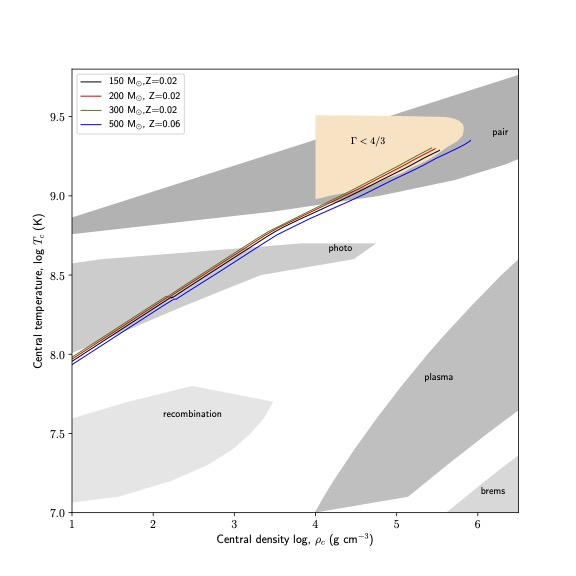

Department of Physics, Universiti Malaya
Research
Our group focusing on two main topics of research, stellar evolution and neutrino astrophysics.
Neutrino Astrophysics
 Neutrino is a particle (fermion) that interact weakly with matter. It plays an important role to keep massive stars alive by keeping the star cool through out its evolution via thermal neutrino loss. There are four major neutrino energy loss processes: pair annihilation, plasmon decay, photoneutrino process, bremsstrahlung and recombination processes.
The figure (on the left side) showing the region of neutrino process according to the different central density and temperature of the very massive stars. Very massive stars which is 100 times larger than our sun has higher central density and temperature than regular massive stars, which reflect the neutrino star to lose its energy in hydrogen burning phase which is earlier than predicted by theory of massive stars which the neutrino loss its energy starting from the carbon burning. This finding has been publish in Monthly Notices of Royal Astronomy Journal 2022. In our research,we are studying the impact of neutrino loss and flux in massive and very massive stars.
Stellar structure and evolution
We present a grid of stellar models at supersolar metallicity (Z = 0.020) extending the previous grids of Geneva models at solar and sub-solar metallicities. A metallicity of Z = 0.020 was chosen to match that of the inner Galactic disc. A modest increase of 43 per cent (= 0.02/0.014) in metallicity compared to solar models means that the models evolve similarly to solar models but with slightly larger mass-loss. Mass-loss limits the final total masses of the supersolar models to 35 M⊙ even for stars with initial masses much larger than 100 M⊙. Mass-loss is strong enough in stars above 20 M⊙ for rotating stars (25 M⊙ for non-rotating stars) to remove the entire hydrogen-rich envelope. Our models thus predict SNII below 20 M⊙ for rotating stars (25 M⊙ for non-rotating stars) and SNIb (possibly SNIc) above that. We computed both isochrones and synthetic clusters to compare our supersolar models to the Westerlund 1 (Wd1) massive young cluster. A synthetic cluster combining rotating and non-rotating models with an age spread between log10(age/yr) = 6.7 and 7.0 is able to reproduce qualitatively the observed populations of WR, RSG, and YSG stars in Wd1, in particular their simultaneous presence at log10(L/L⊙)= 5–5.5. The quantitative agreement is imperfect and we discuss the likely causes: synthetic cluster parameters, binary interactions, mass-loss and their related uncertainties. In particular, mass-loss in the cool part of the HRD plays a key role.
This research is in collaboration with Stellar Hydrodynamics group, Keele University and Stellar Evolution group, Geneva Observatory.
General Relativity in Astrophysics
A relativistic star is a rotating star whose behavior is well described by general relativity, but not by classical mechanics. The first such object to be identified was radio pulsars, which consist of rotating neutron stars. Rotating supermassive stars are a hypothetical form of a relativistic star. In this research we studies the general relativistics stars by using various field.
This research is in collaboration between Universiti Kebangsaan Malaysia and Xiamen University Malaysia.